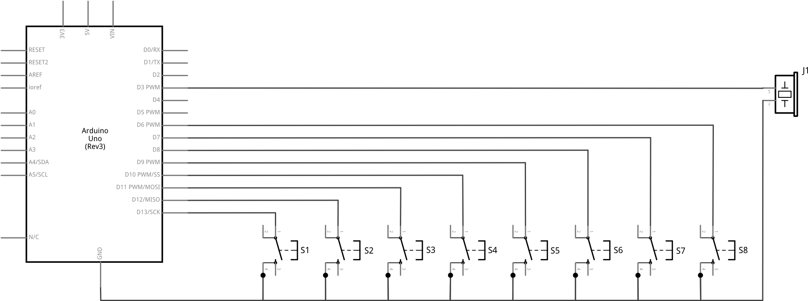
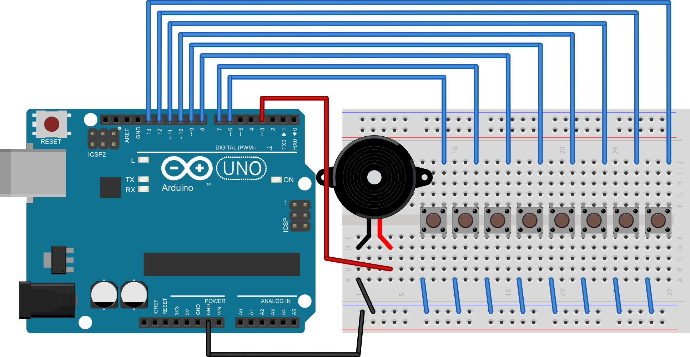

POGLAVLJE 6 - Zadatak 33:
Na mikrokontroler spojite jednu zujalicu i osam tipkala. Napišite program koji će po pritisku na tipkala na zujalici generirati zvukove frekvencija iz donje tablice kako bi napravili jednostavan električni klavir s osam nota.
Tipkalo |
1 |
2 |
3 |
4 |
5 |
6 |
7 |
8 |
Ton |
C5 |
D5 |
E5 |
F5 |
G5 |
A5 |
B5 |
C6 |
Frekvencija |
523 |
587 |
659 |
698 |
784 |
880 |
988 |
1046 |
SHEMA:

EKSPERIMENTALNA PLOČICA:

RJEŠENJE:
int zuj = 3; //definiraj zuj = 3 int tpk1 = 6; //definiraj tpk1 = 6 int tpk2 = 7; //definiraj tpk2 = 7 int tpk3 = 8; //definiraj tpk3 = 8 int tpk4 = 9; //definiraj tpk4 = 9 int tpk5 = 10; //definiraj tpk5 = 10 int tpk6 = 11; //definiraj tpk6 = 11 int tpk7 = 12; //definiraj tpk7 = 12 int tpk8 = 13; //definiraj tpk8 = 13 void setup() { pinMode(zuj, OUTPUT); //postavi izvod zuj kao izlazni pinMode(tpk1, INPUT_PULLUP); //postavi izvod tpk1 kao ulazni pinMode(tpk2, INPUT_PULLUP); //postavi izvod tpk2 kao ulazni pinMode(tpk3, INPUT_PULLUP); //postavi izvod tpk3 kao ulazni pinMode(tpk4, INPUT_PULLUP); //postavi izvod tpk4 kao ulazni pinMode(tpk5, INPUT_PULLUP); //postavi izvod tpk5 kao ulazni pinMode(tpk6, INPUT_PULLUP); //postavi izvod tpk6 kao ulazni pinMode(tpk7, INPUT_PULLUP); //postavi izvod tpk7 kao ulazni pinMode(tpk8, INPUT_PULLUP); //postavi izvod tpk8 kao ulazni } void loop() { if(digitalRead(tpk1)==LOW){ //ukoliko je pritisnuto tipkalo 1 tone(zuj, 523); //generiraj ton C5 } else if(digitalRead(tpk2)==LOW){ //ukoliko je pritisnuto tipkalo 2 tone(zuj, 587); //generiraj ton D5 } else if(digitalRead(tpk3)==LOW){ //ukoliko je pritisnuto tipkalo 3 tone(zuj, 659); //generiraj ton E5 } else if(digitalRead(tpk4)==LOW){ //ukoliko je pritisnuto tipkalo 4 tone(zuj, 698); //generiraj ton F5 } else if(digitalRead(tpk5)==LOW){ //ukoliko je pritisnuto tipkalo 5 tone(zuj, 784); //generiraj ton G5 } else if(digitalRead(tpk6)==LOW){ //ukoliko je pritisnuto tipkalo 6 tone(zuj, 880); //generiraj ton A5 } else if(digitalRead(tpk7)==LOW){ //ukoliko je pritisnuto tipkalo 7 tone(zuj, 988); //generiraj ton B5 } else if(digitalRead(tpk8)==LOW){ //ukoliko je pritisnuto tipkalo 8 tone(zuj, 1046); //generiraj ton C6 } else { //inače - ako nije pritisnuto ni jedno tipkalo noTone(zuj); //isključi generiranje zvuka } }